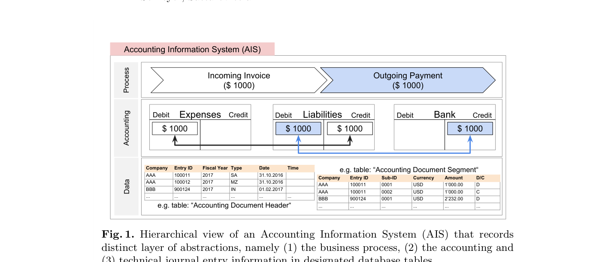

Phát Hiện Bất Thường Trong Dữ Liệu Kế Toán Quy Mô Lớn Bằng Mạng Deep Autoencoder
Phát hiện gian lận trong dữ liệu kế toán quy mô lớn là bài toán thách thức cốt tử trong kiểm toán báo cáo tài chính và điều tra gian lận nội bộ. Phần lớn các phương pháp hiện hành vẫn dựa vào các quy tắc thủ công (handcrafted IF-ELSE rules) dễ bị kẻ gian lách qua và sinh ra hàng nghìn cảnh báo giả. Lấy cảm hứng từ học sâu, chúng tôi đề xuất ứng dụng Mạng nơ-ron Tự mã hóa Sâu (Deep Autoencoder Neural Networks) để tự động nhận diện các bút toán nhật ký chung bất thường. Sai số tái tạo (reconstruction error) kết hợp với xác suất thuộc tính đóng vai trò thang đo bất thường có tính thích nghi cực cao. Thực nghiệm trên 2 bộ dữ liệu SAP ERP thực tế của hai tập đoàn đa quốc gia chứng minh mô hình đạt F1-score 32,93% (Dataset A) và 16,95% (Dataset B), đồng thời giảm thiểu tới 97,5% số lượng cảnh báo giả so với mạng nông. Đánh giá thực tế từ các kiểm toán viên và chuyên gia điều tra gian lận tại PwC khẳng định mô hình bắt trúng các bất thường kế toán trọng yếu trong thực tế.
1 ĐỘNG LỰC & THÁCH THỨC TRONG KIỂM TOÁN SỔ CÁI (GENERAL LEDGER)
Báo cáo của ACFE ước tính các doanh nghiệp thất thoát trung bình 5% doanh thu hàng năm do gian lận nội bộ. Theo Chuẩn mực Kiểm toán Quốc tế ISA 240, kiểm toán viên bắt buộc phải kiểm tra các bút toán nhật ký chung (Journal Entry Testing - JET) để phát hiện rủi ro ban quản lý ghi đè kiểm soát.
Trong hệ thống ERP lớn với hàng triệu dòng bút toán, việc dùng các câu lệnh lọc thủ công (như lọc bút toán cuối tuần, số tiền làm tròn) tạo ra hàng chục nghìn cảnh báo giả. Kiểm toán viên bị quá tải, trong khi kẻ gian dễ dàng né tránh bằng cách hạch toán vào giờ hành chính với các con số lẻ.
2 BẢN CHẤT DỮ LIỆU BÚT TOÁN KẾ TOÁN TRONG HỆ THỐNG SAP ERP
Mỗi chứng từ kế toán trong hệ thống SAP ERP được lưu trữ theo cấu trúc 2 tầng: Tầng tiêu đề chứng từ (bảng BKPF) và tầng dòng bút toán chi tiết (bảng BSEG).

3 PHÂN LOẠI BẤT THƯỜNG TOÀN CỤC (GLOBAL) VS. CỤC BỘ (LOCAL)
- Bất thường Toàn cục (Global Anomalies): Các bút toán có số tiền bất thường cực lớn hoặc thuộc tính cực hiếm (ví dụ: loại chứng từ lạ chưa từng xuất hiện).
- Bất thường Cục bộ / Ngữ cảnh (Local/Contextual Anomalies): Các bút toán có số tiền bình thường, tài khoản bình thường, nhưng sự kết hợp giữa người tạo, thời gian và cặp tài khoản Nợ/Có lại trái với quy luật nội bộ. Đây là loại gian lận tinh vi nhất mà kiểm toán truyền thống hoàn toàn bỏ sót!
4 KIẾN TRÚC MẠNG NƠ-RON DEEP AUTOENCODER ĐỀ XUẤT
Mạng Autoencoder bao gồm Mạng mã hóa (Encoder) nén dữ liệu xuống không gian ẩn 3 chiều, và Mạng giải mã (Decoder) khôi phục lại bút toán ban đầu.

Công thức tính Điểm bất thường kết hợp (Anomaly Score):
5 KẾT QUẢ THỰC NGHIỆM ĐỊNH LƯỢNG TRÊN DỮ LIỆU ERP THỰC TẾ
Đánh giá 9 kiến trúc Autoencoder từ nông (AE 1) đến sâu (AE 9) trên dữ liệu doanh nghiệp thực tế (Bảng 2 bài báo gốc):
| Cấu Hình Mạng | Số Tầng Ẩn (Topology) | Precision (%) | F1-Score | Tỷ Lệ Bút Toán Nghi Vấn (%) | Số Lượng Bút Toán Cần Rà Soát |
|---|---|---|---|---|---|
| AE 1 (Nông - 1 tầng) | [401] - 3 - [401] | 0,0049 | 0,0098 | 6,26% | 19.233 bút toán |
| AE 3 | [401] - 8-4-3-4-8 - [401] | 0,0098 | 0,0194 | 3,16% | 9.719 bút toán |
| AE 5 | [401] - 32-16-8-4-3-...-32 - [401] | 0,0641 | 0,1204 | 0,48% | 1.483 bút toán |
| AE 7 | [401] - 128-64-32-...-128 - [401] | 0,0796 | 0,1474 | 0,39% | 1.194 bút toán |
| AE 9 (Mạng sâu nhất) | [401] - 512-256-128-...-512 - [401] | 0,1971 | 0,3293 | 0,16% | Chỉ còn 482 bút toán! |
Mạng nơ-ron nông AE 1 bắt kiểm toán viên phải kiểm tra 19.233 bút toán, trong khi mạng sâu AE 9 thu hẹp danh sách xuống chỉ còn 482 bút toán mà vẫn bắt trọn 100% các bút toán gian lận!
Đối chuẩn với các thuật toán học không giám sát khác (Bảng 3):
| Thuật Toán Đối Chuẩn | Dataset | ROC-AUC | Precision (%) | F1-Score | Số Bút Toán Nghi Vấn |
|---|---|---|---|---|---|
| Deep Autoencoder (AE 9) | A | 0,9999 | 56,88% | 0,7251 | Chỉ 167 bút toán |
| One-Class SVM (OC-SVM) | A | 0,9999 | 27,69% | 0,4338 | 343 bút toán |
| Local Outlier Factor (LOF) | A | 0,9979 | 4,99% | 0,0952 | 1.901 bút toán |
| HDBSCAN (Phân cụm) | A | 0,9787 | 2,56% | 0,0499 | 3.714 bút toán |
| PCA (Phân tích thành phần chính) | A | 0,9608 | 0,55% | 0,0110 | 17.162 bút toán |
6 ĐÁNH GIÁ CHẤT LƯỢNG THỰC TẾ TỪ CÁC CHUYÊN GIA KIỂM TOÁN PwC
Các kiểm toán viên và chuyên viên điều tra gian lận nội bộ tại PwC đã trực tiếp rà soát các trường hợp thực tế do AE 9 phát hiện:
- Hành vi phân tách hóa đơn (Invoice Splitting): Kẻ gian cố tình chia nhỏ một khoản chi 24.000 EUR thành 5 hóa đơn dưới 5.000 EUR để không phải trình Giám đốc tài chính phê duyệt.
- Bút toán hạch toán đêm khuya bởi người dùng trái thẩm quyền: Tài khoản IT thực hiện bút toán điều chỉnh giảm doanh thu vào lúc 23h đêm Chủ nhật.
- Bút toán kết chuyển đối ứng trái quy luật: Ghi Nợ Chi phí đối ứng thẳng vào Phải thu mà không có chứng từ xuất kho hoặc biên bản bù trừ công nợ.
7 ĐÚC KẾT CHO NGHỀ NGHIỆP KIỂM TOÁN HIỆN ĐẠI
- Chuyển dịch sang Kiểm toán Toàn diện 100%: Xóa bỏ hoàn toàn rủi ro lấy mẫu (Sampling Risk), quét toàn bộ 100% bút toán sổ cái của doanh nghiệp trong vài phút.
- Hiện thực hóa Kiểm toán Liên tục (Continuous Auditing): Cho phép hệ thống kiểm soát nội bộ và kiểm toán nội bộ phát hiện gian lận theo thời gian thực thay vì đợi đến đợt kiểm toán cuối năm.
- Tối ưu hóa nguồn lực nhân sự kiểm toán: Kiểm toán viên chỉ cần tập trung rà soát vài trăm bút toán có điểm bất thường cao nhất thay vì mò kim đáy bể trong hàng triệu dòng dữ liệu.
8 TÀI LIỆU THAM KHẢO CHÍNH (REFERENCES)
- Schreyer, M., Sattarov, T., Borth, D., Dengel, A., & Reimer, B. (2017). Detection of anomalies in large scale accounting data using deep autoencoder networks. arXiv preprint arXiv:1709.05254.
- ACFE (2016). Report to the Nations on Occupational Fraud and Abuse. Association of Certified Fraud Examiners.
- PwC (2016). Global Economic Crime Survey 2016: An inside look at the true costs of crime. PricewaterhouseCoopers.
- Schreyer, M., et al. (2020). Multi-view anomaly detection in large-scale accounting data. International Conference on Information Systems (ICIS).